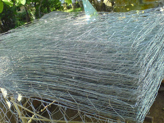
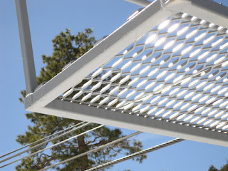

Jual Genteng Metal di Pasuruan ☎ 0822 4582 0777 (Rinanti)
Galvalum sudah menjadi primadona bagi banyak orang yang bekerja dalam industri pembangunan. Ini membuktikan bahwa atap adalah kebutuhan primer setiap bangunan. Namun, bagaimana dengan bangunan kecil, sedang maupun besar? Jangan khawatir tentang hal tersebut, banyak sekali jenis atap yang dapat anda jadikan sebagai referensi pilihan atap bagi bangunan yang anda bangun. Salah satunya adalah atap galvalum, atap lengkung maupun genteng metal. Pada kesempatan kali ini saya akan membahas beberapa jenis atap, seperti atap galvalum, atap lengkung, seng gelombang, plat seng & plat galvalum dan masih banyak lagi. Apa yang terjadi? Tentu anda tahu, atap tersebut tidak akan bertahan lama dan bahkan bisa langsung roboh karena tidak adanya pondasi yang menyangganya.
Distributor & Supplier Genteng Metal

Kami adalah distributor genteng metal Pasuruan, tersedia berbagai ukuran dan varian genteng metal Pasuruan. Sebelum itu, kami akan menjelaskan apa itu genteng metal Pasuruan dan genteng metal Pasuruan pasir. Salah satu dari kelebihan genteng metal Pasuruan adalah lebih membuat rumah anda bersih, rapi, lebih anti bocor, dan juga lebih ringan. Perihal harga, karena kami distributor resmi maka akan kami berikan harga pabrik untuk anda. Dengan berbagai keunggulan yang sudah saya jabarkan diatas, maka apalagi yang anda tunggu untuk mendapatkannya? Segera dapatkan genteng metal Pasuruan tersebut di official situs kami di dis.or.id dan dapatkan penawaran menarik. Apakah mitos itu benar? Faktanya beberapa jenis genteng metal Pasuruan memang menyebabkan rumah terasa lebih panas dan berisik ketika hujan, namun kabar baiknya bila anda memilih menggunakan genteng metal Pasuruan pasir terbaik anda dipastikan akan terhindar dari dua hal tersebut. Apakah anda sedang mencari genteng metal Pasuruan berkualitas? Maka anda berada di tempat yang tepat, silakan kunjungi dis.or.id dan dapatkan info menarik khusus untuk anda yang ingin segera mengetahui keunggulan genteng metal Pasuruan ini.
Apakah anda mencari genteng metal Pasuruan? Silakan kunjungi official site dis.or.id dan temukan info menarik untuk anda. kami berusaha mencari kepuasan pelanggan kami. Karena kepuasan dan kepercayaan pelanggan adalah segalanya bagi kami.
Info Pemesanan Selengkapnya
Google Maps: https://www.google.com/maps/d/u/0/viewer?mid=18K_Vf8GKnjN9AtE2jUMATDSYvScojDst&ll=-7.269373870070218%2C112.655575&z=16
Note: https://www.facebook.com/notes/distributor-of-industrial-supply/pabrik-supplier-genteng-metal/1783191985314014/
Event: https://www.facebook.com/events/1480458558737554/
Portfolio Produk: https://www.facebook.com/pg/DistributorOfIndustrialSupplyDIS/photos/?tab=album&album_id=1683750531924827
Distributor & Supplier Besi Beton

Bangunan apakah itu dalam wujud rumah atau toko harusnya menggunakan material yang kokoh dan kuat. Definisi dari besi beton adalah sebuah besi berupa material yang umumnya digunakan sebagai konstruksi.
Besi beton polos sangat jarang digunakan kecuali digunakan sebagai kolom.
Segera kunjungi dis.or.id untuk mendapatkan besi beton yang anda inginkan. Anda bisa mendapatkan besi beton dengan harga yang sangat murah dan terjangkau. Kualitas dan mutunya pun telah terjamin. Jadi, anda tidak perlu ragu lagi.
Distributor & Supplier Steel Grating

Plat Grating terbaru memiliki kualitas terbaik yang bisa digunakan untuk sarana pembangunan pada industri hingga pertambangan. Plat Grating tersebut dibuat dari jenis baja dengan kualitas yang tinggi kemudian dilas antara satu dengan yang lain. Tetapi, jangan hanya memperhatikan harga karena Anda harus mempertimbangkan kualitasnya terlebih dahulu. Karena harga murah tidak menjamin adanya kualitas yang terbaik. Terbuat dari bahan yang hot deep galvanis sehingga grating tidak mudah berkarat meskipun terkena air hujan di setiap harinya. Pada umumnya, Grating hanya memiliki 2 type, yaitu serrated atau bergerigi dan plain atau polos.
Kini anda bisa mendapatkan steel dengan mengunjungi dis.or.id. Terdapat beberapa ukuran yang bisa anda pesan sesuai dengan kebutuhan pembangunan anda. Memesan steel grating di dis.or.id pastinya anda tidak akan merasa rugi.
Distributor & Supplier Pipa (Hitam/Gas, Galvanis)

Mungkin anda masih bingung mengenai manfaat pipa hitam ini dalam kehidupan, padahal jika dilihat lagi ada banyak manfaat yang diperoleh dengan mengaplikasikan pipa hitam gas galvanis. Setiap konstruksi bangunan pasti akan memanfaatkan jenis pipa hitam karena ia sangat kokoh, bahkan bagian luarnya telah terlapis oleh stainless steel sehingga menjadikannya tahan korosi. Untuk itu, anda bisa aplikasikan pipa hitam di segala wilayah indonesia karena ia tahan korosi cuaca. Tentukan kebutuhan pipa hitam anda pada kami, tersedia ukuran ½ inc sampai 40 inc. Hubungi segera kontak yang telah tersedia untuk informasi lebih detail, kami menerima segala kebutuhan besi baja anda kapanpun dan dimanapun.
Distributor & Supplier Kawat Bronjong/Gabion

Biasanya ini dilakukan ketika ada jalan atau bangunan yang ada di bawah tebing. Ini berbentuk seperti anyaman yang terbuat dari kawat biasa. Hanya saja, karena ini berfungsi untuk mencegah erosi, maka kualitas kawat berbeda dengan kawat yang sering digunakan. Ini biasanya diterapkan pada tebing tinggi yang sangat rawan sekali terjadi longsor atau erosi karena air hujan. Tujuannya agar bebatuan tidak hancur karena terkena ombak terus menerus.
Jika anda sedang mencari kawat bronjong, anda bisa datang dan mengunjungi situs dis.or.id. Disan anda bisa mendapatkan informasi tentang kawat bronjong dengan berbagai ukuran dan harga yang pastinya sangat terjangkau.
Distributor & Supplier WF H-beam
.jpg)
Saat ini, banyak orang yang ingin mencari jenis besi WF, terlebih ini zaman yang serba modern dan praktis. Konstruksi baja banyak yang memakai besi ini untuk bahan bajanya. Dari sisi kekuatan, jenis besi ini tergolong padat dan kuat selipun di tekan dan di tarik. sementara untuk pemesanan juga mudah, Anda cukup menghubungi pihak produsen sudah bisa mendapatkannya. Anda juga bisa lebih gampang saat memakai besi ini karena sifatnya yang tidak terlalu berat dan bisa dibilang ringan dengan komponen yang seimbang.
Maka dari itu, kualitasnya sudah terjamin.
Kini anda bisa mendapatkan besi WF H-beam dengan sangat mudah, caranya anda bisa langsung saja datang ke dis.or.id. Harga yang di patok juga sangat terjangakau, jadi anda tidak perlu mengeluarkan budget terlalu banyak. Disana anda bisa mendapatkan besi wf yang anda inginkan. Pastinya dengan harga yang sangat terjangkau.
Distributor & Supplier Expanded Metal

Fungsi expanded metal diantaranya untuk anak tangga pada tower dan ternyata banyak juga digunakan di dermaga/pertambangan/konstruksi lepas pantai. Umumnya dipergunakan sebagai kawat parabola, speaker grill, kawat nyamuk dan lain sebagainya. Selain itu, Expended Metal juga dikenal mampu menahan beban berat, memiliki permukaan yang anti slip/tidak licin, dan juga dikenal tahan karat untuk material yang dari alumunium.
Kini anda bisa membeli expanded metal yang anda inginkan dengan mengunjungi dis.or.id. Terdapat berbagai ukuran dari expanded metal yang bisa anda pilih dan anda pesan sekarang juga.
Distributor & Supplier Plat (Hitam, Kapal, Bordes, Strip)
.JPG)
Apabila anda saat ini sedang mencari tempat atau toko yang jual plat hitam , anda dapat menemukannya di toko besi terdekat. Dengan membeli secara online, anda akan lebih efektif dan efisien dalam melakukan pemesanan. Plat besi bordes ini saat ini lebih banyak digunakan sebagai bahan pembuatan mobil, terutama mobil pengangkut seperti truk, pick up, dan lain sebagai nya.
Dis.or.id juga menawarkan plat hitam, kapal, bordes dengan ukuran yang telah anda tentukan. Segera hubungi nomor dis.or.id dan segera order karena dis.or.id adalah agen resmi yang langsung mengambil plat hitam ini dari pabriknya. Anda pastinya tidak akan rugi jika membeli plat besi dengan banyak varian dan jenis yang disediakan disana.
Distributor & Supplier Floor Deck (Bondex)

Anda yang punya rencana pembangunan dan membutuhkan material untuk pengecoran lantai mungkin bisa menggunakan floor deck. Biasa di gunakan sebagai alas dalam proses pembuatan lantai dan atap dak beton. Floor deck merupakan material yang tahan terhadapa api di bandingkan dengan material kayu lainnya. Selain itu, Floor Deck ini bisa dipasang pada konstruksi baja ataupun beton serta didukung dengan data perencanaan. Sedangkan untuk panjang dan juga lebarnya ada beberapa variasi.
Jika anda saat ini sedang mebutuhkan floor deck dengan kualitas yang mumpuni, anda bisa langsung mengunjungi situs dis.or.id. Disana anda bisa mendapatkan floor deck yang anda inginkan dan tentunya dengan harga yang jauh lebih murah di bandingkan dengan tempat lainnya.
Distributor & Supplier Atap Galvalum

Atap galvalum mempunyai komposisi tertentu sehingga menyebabkan atap galvalum tersebut lebih kuat dan awet jika dibandingkan dengan bahan baja ringan lainnya.
Ada yang menjual per m2 tapi ada pula yang menjual dengan sistem lembaran. Selain memberikan banyak keuntungan, kesan pada rumah anda juga akan terlihat modern. Galvalum mempunyai berbagai ukuran yang sesuai dengan kebutuhan.
Ada anggapan bahwa atap galvalum membuat suasana menjadi panas dan bersik. Galvalum sendiri mempunyai banyak kelebihan diantaranya adalah anti panas. Ada pula tanggapan yang mengatakan bahwa atap galvalum itu panas dan juga berisik. Ini dikarenakan seng menyebabkan rumah anda menjadi terasa panas. Karena galvalum mempunyai daya tahan karat 4x dari galvanis. Atap galvalum mempunyai banyak tipe, jenis dan ukuran yang sesuai dengan ukuran yang dapat anda pilih. Perbedaan ukurannya terletak pada panjang, lebar dan tebalnya.
Distributor & Supplier Atap Lengkung

Salah satu bagian penting pada bangunan baik untuk rumah, kantor maupun toko adalah atap. Tidak terkecuali gudang, halte, maupun peneduh bagi kendaraan. Terkadang atap lengkung ini juga sangat berguna bila dipakai dengan hal demikian.
Sifat fleksibelnya dan modelnya yang unik membuatnya dapat dijadikan atap berbagai bangunan. Salah satu jenis atap galvalum yang sekarang sedang populer adalah atap lengkung. Sehingga membuat jenis atap tersebut mempunyai kelebihan dan kekurangannya sendiri.
Namun, saat ini pembahasan saya adalah atap dengan bahan galvalum dengan bentuknya yang unik. Anda pastilah pernah melihat bahwa atap di salah satu stadion itu berbentuk lengkungan. Nah, atap lengkung inilah yang berjasa membuat stadion tersebut terlihat megah. Bila anda tertarik untuk mempunyai atap lengkung pada bangunan anda maka janganlah ragu. Atap lengkung yang anda cari tentunya adalah atap dengan kualitas tinggi dengan harga terjangaku. Karena kami adalah tangan pertama yang bertindak sebagai supplier, toko sekaligus distributor.
Distributor & Supplier Truss Canal C
Salah satu besi yang tidak kenal musim dan telah banyak menggantikan dan menggeser fungsi kayu sebagai pembangunan rumah anda. Sehingga akan awet bahkan dengan karat sekalipun. Tidak heran bila saat ini besi ini lebih banyak diminati, selain karena mudah didapatkan, memiliki kekuatan yang sama, tahan lama juga karena harga yang dinilai lebih ekonomis. Galvalum memang kerap dijodohkan dengan kanal c, ini dikarenakan keduanya yang saling melengkapi. Pilihan ini amatlah tepat mengingat bahwa besi ini sangat melengkapi kekurangan dalam pembangunan rumah minimalis tersebut. Oleh karena itu, jangan ragu lagi atas kegunaan besi yang satu ini.
Distributor & Supplier Hollow Galvalum

Apakah anda sedang membutuhkan atau mencari informasi seputar hollow galvalum? Penasaran dengan fungsinya? Harganya? Atau keterangan keterangan lainnya. Sebenarnya ada banyak unsur yang dilibatkan dalam pembuatan hollow galvalum ini, yaitu alumunium, baja, beserta zinc. Namun, untuk mendapatkan hollow galvalum ini anda tidak perlu repot untuk mencarinya.
Bahan jenis ini memiliki banyak sekali kelebihan, selain tahan terhadap karat, hollow galvalum juga tahan terhadap serangan rayap dan juga memiliki beban yang cukup ringan. Rumah rumah masa kini, sudah banyak yang menggunakan rangka jenis hollow untuk pembuatan plafonnya. Pastikan untuk menghubungi kami saat ini juga. Dan apabila memungkinakan, pilihlah produk yang berstandar SNI dan bersertifikat. Disana sudah banyak info mengenai hollow galvalum, dari mulai ukuran, harga, berat dsb. Bukan harga agen ataupun perantara lainnya. Tertarik untuk membeli? Hubungi kami sekarang juga, karena kami memiliki penawaran menarik untuk anda.
Distributor & Supplier Seng Gelombang

Seng gelombang dijual dengan harga yang relatif murah dibanding genteng, hal inilah yang menjadi daya tarik besar penggunaannya. Baik itu bangunan besar dan kecil, tanpa atap yang berkualitas maka bangunan tersebut rentan kebocoran. Meskipun begitu, nyatanya seng gelombang memiliki kekurangan yakni ia lebih cepat menyerap panas. Seng gelombang memiliki banyak keunggulan dari berbagai sisi. Ia lebih mudah di pasang dan harga jual yang ekonomis dipasaran membuat seng gelombang memiliki banyak peminat. Terkadang tak hanya jenis seng gelombang dengan ukuran besarlah yang dicari kebanyakan orang.
Maka, anda cukup mengunjungi situs dis.or.id sehingga anda akan mampu terpuaskan dengan keingin tahuan anda tentang seng gelombang.
Distributor & Supplier Plat Seng

Biasanya plat galvanis dijual lembaran atau per meter. Selain itu manfaat dan kelebihan yang dimiliki jauh lebih banyak dari seng biasa.
Namun apabila anda membutuhkan nya hanya sedikit, misal untuk penyambungan, atau ingin mengganti beberapa bagian talang rumah anda, anda dapat membeli yang per meter saja. Berbicara tentang plat seng maka tentu tidak lepas dengan galvalum dan galvanis, yang merupakan jenis plat seng paling berkualitas. Harga yang kami tawarkan untuk anda adalah yang termurah, karena kami adalah distributor resmi dan langsung dari pabrik.
Disana banyak sekali info yang sangat berguna untuk anda yang sedang mencari plat seng & plat galvalum sesuai kebutuhan anda.
Distributor & Supplier Besi Wiremesh

Jika anda membutuhkan besi lonjor yang membentuk anyaman anda dapat membeli jenis besi wiremesh pada kami. Kebanyakan masyarakat menganggap besi wiremesh dengan sebutan besi anyam. Bentuk anyam dari besi wiremesh tersedia bermacam-macam, ada yang berbentuk kotak ada juga yang berbentuk jajar genjang, setiap jenis besi wiremesh dapat anda pilih sesuai kebutuhan. Dengan memiliki bentuk yang mirip seperti besi anyam, pemanfaatan besi ini sangat banyak terutama dalam dunia konstruksi, salah satunya adalah sebagai plat lantai dan dak beton. Setiap jenis besi wiremesh diperuntukkan untuk kebutuhan yang berbeda-beda, untuk itu anda harus memilih jenis wiremesh sesuai dengan kekuatannya. Besi wiremesh terdiri dengan berbagai macam ukuran ketebalan, ketebalan 8 – 10 digunakan untuk bangunan bertingkat. Sedangkan untuk kebutuhan bangunan biasa menggunakan jenis wiremesh ukuran 4 sampai 6 sudah cukup kuat. Karena di produksi dengan teknologi masa kini yaitu sistem las otomatis, menjadikan pengerjaan susunan kawat lebih rapi dan lebih kokoh. Untuk informasi lebih detail, anda dapat menghubungi kontak yang telah tersedia.
Distributor & Supplier Pagar BRC

Pagar brc di produksi dengan material besi yang memiliki ketebalan berbeda-beda, ada yang 5mm – 8mm. Potongan besi berdiameter tersebut kemudian digabungkan menjadi satu menggunakan mesin las wiremesh. Ia termasuk kategori pagar minimalis yang siap pasang untuk melindungi bangunan rumah, gedung, dan kantor. Untuk melindungi sebuah bangunan, kekuatan pagar BRC sangat dapat diandalkan karena ia diproduksi dengan baja bertegangan tinggi dengan tegangan ijin 2900 kg/cm2, kekuatannya bahkan 2,5 kali lipat dibanding jenis besi biasa.
Distributor & Supplier Kawat Loket, Kawat Harmonika

Apakah anda membutuhkan kawat untuk penyekat? Kawat pagar? Penutup jendela? Atau kebutuhan lainnya? Untuk kebutuhan seperti ini anda bisa gunakan kawat loket harmonika yang memiliki bentuk seperti anyaman dan kuat. Pemanfaatan kawat harmonika sendiri sangat banyak, apalagi mengingat bentuknya yang kuat seperti anyaman. Jika dilihat dalam kehidupan sehari-hari kawat harmonika banyak diaplikasikan untuk kebutuhan industri, konstruksi, rumahan, dan lainnya. Anda dapat memesan kawat loket harmonika yang terlapis dengan galvanis untuk kualitas terbaik yang tahan korosi. Kawat loket harmonika yang kami tawarkan berkualitas mutu tinggi sehingga cocok untuk berbagai keperluan, segera hubungi kami untuk informasi pemesanan!
Distributor & Supplier CNP & UNP

Selain itu, besi ini banyak dimanfaatkan untuk keperluan girts atau penutup dinding. Besi UNP sebenarnya memiliki spesifikasi yang hampir sama dengan wide flange, hanya saja besi UNP mudah menekuk sehingga sangat jarang digunakan sebagai kolom bangunan. Besi UNP juga sering dikaitkan dengan besi CNP yang juga masuk dalam kategori kelasnya. Jika besi UNP dimanfaatkan untuk keperluan penutup sebuah dinding karena bentuknya melengkung seperti huruf U, beda halnya dengan besi CNP yang sering disebut sebagai balok purlin. Besi CNP sangat fleksibel karena materialnya dapat dimodifikasi dengan menggunakan plat koil. Pemanfaatannya bahkan bisa untuk keperluan otomotif.
Distributor & Supplier Besi Siku

Salah satu material besi baja yang memiliki banyak manfaat untuk kehidupan ini adalah besi siku, jenis material ini bahkan bermanfaat untuk kebutuhan rumahan. Besi siku dibuat dengan bentuk standar yang telah disesuaikan berdasarkan kebutuhan penggunanya, tak heran bila ia masuk kategori besi penyangga yang dapat diandalkan. Bentuk dari besi siku sendiri adalah membentuk dua sisi tegak yang lurus, untuk sudut berhadapannya sendiri tergantung dengan spesifikasi kebutuhan anda. Ukuran panjang dari besi siku yang kami sediakan adalah panjang 6 meter, dan ketebalan yang bisa anda sesuaikan dengan kebutuhan. Untuk info selengkapnya, anda dapat menghubungi kontak yang telah tersedia.
Distributor & Supplier Hollow (Hitam, Galvanil, Galvanis)

Sekarang ini besi hollow pemanfaatannya sudah melebihi kayu, meskipun terbuat dari besi kualitasnya pun tidak dapat diragukan lagi.Sekarang sudah banyak orang yang beralih pemanfaatan dari kayu menjadi menggunakan besi hollow.Banyak orang yang mulai beralih dari pemanfaatannya yang menggunakan kayu beralih pada hollow hitam galvanil.Besi hollow saat ini menjadi material pengganti kayu yang sangat baik. Dis.or.id pun telah menyediakan produk besi hollow hitam galvanis ini untuk dapat anda pesan langsung! Tersedia ukuran besi hollow 40 x 40 x 2 mm x 6 Meter, 50 x 50 x 3 mm x 6 Meter hingga ukuran 150 x 150 x 5 mm x 6 meter dan masih banyak lagi. Anda bisa menghubungi kontak yang telah tersedia untuk informasi produk lebih detail. Besi hollow bisa dimanfaatkan untuk berbagai keperluan, misalnya seperti pagar, pintu besi, teralis, dan masih banyak lagi. Untuk itu hubungi kontak kami segera!
Distributor & Supplier Pipa Pancang

Sebagai salah satu konstruksi bangunan, tentu saja pipa pancang sudah cukup di kenal. Apalagi dengan fungsinya yang semakin memudahkan pemasangan. Terutama bagi Anda yang sedang membangun proyek di atas permukaan laut, tentu saja ini akan sangat membantu. Sedangkan dari segi spesifikasi, pipa pancang tersedia dalam berbagai ukuran. Hal ini bertujuan untuk memudahkan penyesuaian. Dengan demikian, ketika di gunakan pun bisa semakin maksimal. Sedangkan untuk kualitas pipa pun akan sangat terjamin dengan mutu terbaik. Terlebih jika mengingat berbagai kelebihan dan fungsi nya yang bisa di terapkan di mana-mana.
Jasa Pondasi Bor (Strouss/Borepile)

Dalam pembangunan rumah, tentu saja setiap orang menginginkan hasil terbaik sehingga bisa membuatnya puas, termasuk juga untuk pengeboran pondasi. Bahkan tidak perlu jauh-jauh karena di sini juga menerima pemesanan jasa tersebut. Apalagi mengingat pelakunya adalah mereka yang sudah profesional dan sangat berpengalaman. Dalam prosesnya, pengeboran ini akan menimbulkan suara bising karena mesinnya yang sedang bekerja. Dalam hal ini jika tidak ingin menggunakan jasa bor, Anda bisa membeli mesinnya. Selain penggunaan jasa pondasi bor, Anda bisa memiliki mesin sendiri. Sedangkan untuk kualitas pun tidak jauh berbeda sehingga tidak perlu di khawatirkan.
Distributor & Supplier Genset (New/Second)

Sejauh ini, genset atau generator set uang sudah banyak di aplikasi kan dengan bahan bakarnya yang berupa solar tentu saja juga sudah cukup terkenal. Dalam penggunaannya, genset ini menggunakan bahan bakar berupa solar. Biasanya penjualan genset ini bisa berupa genset baru atau bekas.
Dalam masalah harga, tentu saja memang genset di jual dengan cukup mahal. dengan demikian, pastilah akan lebih meringankan manakala Anda memilih genset yang sudah bekas.
Distributor & Supplier UPS

Untuk alat elektronik yang satu ini, biasanya memang belum cukup terkenal kecuali untuk dunia elektro. UPS ini merupakan salah satu alat elektro yang mampu menyimpan energi listrik sehingga bisa di fungsi kan ketika sumber utama terputus. Sedangkan UPS sendiri merupakan sebuah alat elektronik yang mampu akan menjadi sumber listrik pengganti sementara jika sumber utamanya terputus. Sejauh ini tentu saja akan sangat penting memiliki UPS terutama bagi pengguna komputer. Karenanya, ketika Anda membeli UPS ini, sebaiknya memastikan terlebih dahulu seberapa besar kapasitas yang Anda butuhkan. Sedangkan untuk pembeliannya, Anda bisa mendapatkan barang di DIS.
Distributor & Supplier Forklift (Second)

Di dunia industri, tentu saja penggunaan forklif juga tidaklah asing. Termasuk untuk forklif yang dalam kondisi bekas. Termasuk jika ingin yang bekasnya pun di sini ada. Sedangkan di sini, Anda bisa menemukan penjualan tersebut dengan kualitas barang yang memuaskan sekalipun merupakan barang second. Nah, jika Anda sedang mencari bekas pun di DIS juga bisa di dapatkan. Yang lebih menarik lagi, forklif cukup menguntungkan karena jika sudah tidak di gunakan lagi Anda bisa menjualnya kepada beberapa distributor yang tersedia di berbagai tempat. Selanjutnya, jika forklif sudah tidak di gunakan, Anda pun bisa kembali menjualnya pada setiap distributor forklif sehingga tidak akan rugi membelinya.
Jasa Pembuatan Moulding Inject

Bagi Anda yang sedang bingung untuk membuat moulding inject, jangan khawatir karena ada solusi yang bisa Anda temukan di sini. solusi tersebut adalah dengan memilih jasa pembuatan moulding inject seperti yang di tawarkan DIS. Di sini, Anda bisa mendapatkan moulding inject dengan kuantitas tanpa batas. Bahkan ketika Anda bingung ide, ada banyak pilihan yang bisa di gunakan dan di sesuaikan dengan kebutuhan. Setelah menyesuaikannya dengan benar, maka Anda akan mendapatkan moulding inject yang tepat sasaran sesuai dengan produk. Jadi tinggal menyesuaikan saja dengan kebutuhan Anda sehingga pembuatannya bisa benar-benar pas.
Jasa Pembuatan Sparepart Mesin Produksi / Alat Berat

Dalam setiap proyek pembangunan, adanya alat berat atau sparepart tentu bukanlah hal yang asing pula. Salah satunya adalah sebagaimana yang di tawarkan industri DIS. Oleh karena itulah di butuhkan hasil berkualitas sehingga bisa bekerja secara maksimal.
Jasa Service Elektronik (Kompor Gas, Dispenser, Mesin Cuci)

Service elektronik, kini sudah banyak di temui. Sedangkan di industri DIS pun Anda juga bisa mendapatkan jasa tersebut. Untuk kualitas service yang di tawarkan, jangan khawatir karena kualitasnya sangatlah tinggi. dengan demikian Anda kan semakin di untung kan sekaligus mendapatkan nilai ekonomis nya karena tidak harus berganti barang baru. Sedangkan service elektronik ini sendiri, sebenarnya tidak harus saat barang Anda rusak saja. Melainkan untuk sekedar pengecekan setelah sekian lama pun bisa.
Sudahkah anda mengetahui arti penting dari sebuah komponen bernama atap? Keberadannya amat penting bukan? Bahkan bisa disebut kebutuhan primer setiap bangunan. Hanya bangunan yang terbengkalai yang tidak mempunyai atap. Dari rumah paling kecil hingga bangunan termegah sekalipun pasti membutuhkan atap sebagai kebutuhan utamanya. Tapi salah satu solusi selain hal tersebut adalah menggunakan atap dengan berbagai jenis sesuai dengan yang saya bahas diatas. Tergantung dari kebutuhan, tentunya anda dapat memilih atap sesuai keinginan anda. Bila anda berkenan, maka anda dapat mengujungi situs utama kami dis.or.id. Jadi bila anda tertarik dalam mencari berbagai jenis atap dan bingung dalam memilih.